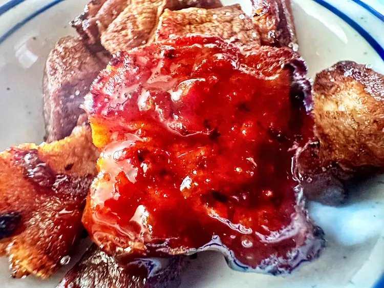

Gochujang Pork Belly
Back to Home

Description
These gochujang pork belly bites are sweet and spicy, crispy and crunchy, and absolutely delicious.
Whether you finish them with the gochujang sauce in the air fryer, or just dip them in the sauce at the end, they are irresistibly good.
Ingredients
- 2 pounds pork belly, cut into bite-sized pieces
- 1/2 cup gochujang
- 4 tablespoons soy sauce
- 2 tablespoons hot honey,such as Mike's® Hot Honey
- 2 teaspoons ground ginger
Steps
- Preheat an air fryer to 400 degrees F (200 degrees C).
- Place pork belly pieces in the basket in a single layer, not touching. Air fry for 8 to 9 minutes; turn over and air fry for 6 to 7 minutes more.
- Meanwhile, for sauce, stir gochujang, soy sauce, hot honey, and ginger together in a medium bowl.
- Remove pork belly from air fryer basket; toss in sauce to coat.
Return to the air fryer and fry until bites begin to char at the edges, 8 to 11 minutes more.
(Alternately, you can use sauce only for dipping; in this case, continue to fry without removing bites, until they begin to char, 6 to 7 minutes.)